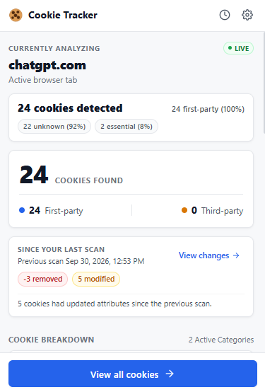
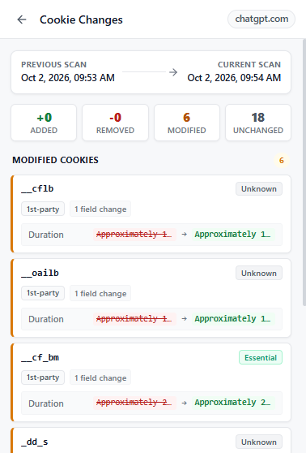
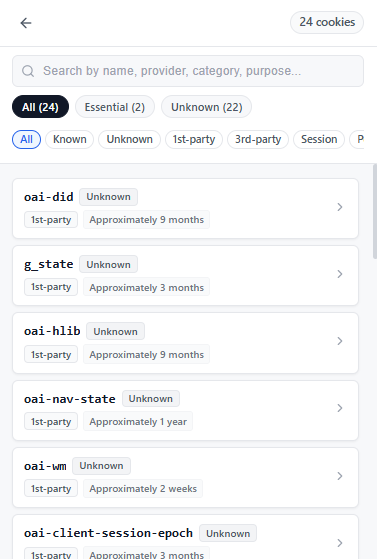
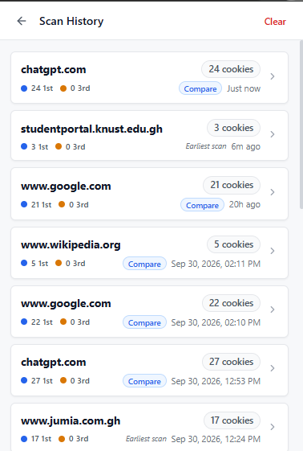
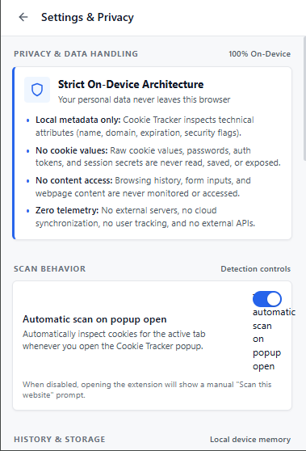

Cookie Tracker
Understand the cookies used by websites you visit.
Browser Extension / Privacy Engineering / 2026
A privacy-focused Manifest V3 browser extension that makes browser cookie metadata easier to understand through local analysis and transparent uncertainty.

Real screenshot: Cookie Tracker v1.0.0 popup auditing active tab cookies on chatgpt.com with real-time change detection.
— 01 / THE VISIBILITY GAP
The Illusion of Cookie Consent
Modern websites present cookie consent banners with simple binary toggles. However, once consent is granted or denied, users are left with zero meaningful visibility into what is actually stored on their machines.
Opaque Persistence
Users cannot tell whether a cookie is an ephemeral session token discarded on tab closure or a persistent tracking identifier scheduled to linger on disk for years.
Ambiguous Attribution
Websites load scripts from dozens of subdomains and content delivery networks. Disentangling true primary domain state from third-party advertising origins is virtually impossible in native browser dialogs.
Unclear Lifecycles
Cookies mutate silently as users navigate, authenticate, and interact. Traditional inspection displays only an isolated snapshot, hiding lifecycle mutations and attribute drift between visits.
Hidden Security Attributes
Critical defensive flags (Secure, HttpOnly, SameSite) govern vulnerability to cross-site scripting (XSS) and network interception, yet remain buried inside developer tooling.
Uncertain Cookie Roles
Cryptic strings like __cf_bm, oai-did, or _ga mean nothing without contextual intelligence. Users cannot distinguish critical authentication tokens from advertising trackers.
— 02 / SYSTEM ARCHITECTURE
Why a Browser Extension?
Remote website scanners inspect pages from headless servers in a datacenter, which fundamentally fails to capture personalized session states, authenticated flows, or user-specific cookies. A browser extension was chosen because true visibility requires local execution.
Authenticated Context
Inspects the actual cookies set during real, authenticated browsing sessions rather than synthetic, unauthenticated crawler crawls.
Zero Data Leakage
Scanning happens 100% on-device. No URLs, session identifiers, or metadata are ever transmitted to an external server or proxy.
Native API Precision
Direct integration with Chrome's chrome.cookies API provides authoritative flags directly from the browser's internal cookie jar.
On-Device Pipeline Architecture
— 03 / PRODUCT PREVIEW
Interface in Action
High-fidelity, real screenshots captured directly from Chromium on Windows, illustrating the complete auditing workflow from live overview to granular attribute diffing.




— 04 / CALIBRATED UNCERTAINTY
Never Guess: Transparent Uncertainty
Most privacy tools overpromise by inventing cookie classifications based on fragile keyword substrings. Cookie Tracker rejects false confidence in favor of rigorous epistemic honesty.
Cookie Tracker does not invent cookie purposes when evidence is insufficient.
If a cookie's origin and signature are verified, it receives a clear classification and calibrated confidence score. When evidence is incomplete, custom, or ambiguous, Cookie Tracker explicitly tags it as Unknown with Low confidence rather than misleading the user.
Pattern matched against verified provider signatures or standard specification tokens. Assigned High or Medium confidence with verified role attribution.
Bespoke, proprietary, or undocumented session keys. Presented transparently as Unknown without deceptive guesswork.
— 05 / DATA PIPELINE
How It Works: Ingestion & Sanitization
Security begins at ingestion. When the browser retrieves cookies, raw cookie values are permanently stripped before any analysis, classification, or storage occurs.
The pipeline enforces a strict whitelist of technical metadata fields. Any unapproved property—including authentication bearer tokens, passwords, session values, or unexpected browser properties—is discarded at the boundary:
Deterministic Compound Identity
Because RFC 6265 permits identical cookie names across distinct domain scopes or path hierarchies, normalized cookies are indexed by a compound identity key (name|domain|path). This prevents collisions and guarantees mathematical consistency in change diff calculations.
— 06 / CAPABILITIES
Core Engineering Features
Engineered as a lightweight, modular system delivering rapid forensic visibility into client-side state without bogging down the browser.
Cookie Detection
Real-time discovery of all cookies accessible to the active tab via Chrome's native cookie store, distinguishing top-level host cookies from embedded third-party contexts.
Cookie Intelligence
Rule-based pattern matching utilizing 48 curated signatures and 14 provider signatures to accurately identify essential, analytics, and functional cookies with clear confidence levels.
Technical Privacy Insights
Automated security posture audits alerting users to missing Secure flags on HTTPS origins, unflagged HttpOnly session tokens, and excessively broad SameSite=None configurations.
Scan History
Indexed, per-domain historical archive persisted in local sandboxed storage, allowing users to review previous audit sessions without creating any cloud footprints.
Change Detection
State diff engine comparing consecutive site visits to quantify added, removed, modified, and unchanged cookies, surfacing silent attribute alterations over time.
Settings & Privacy Controls
Configurable scanning behavior (automatic vs. manual scan-on-open), instant history purging controls, and verifiable on-device data architectural documentation.
— 07 / TECHNICAL DEEP DIVE
Engineering Challenges
Overcoming the subtle concurrency hazards, cryptographic constraints, and DOM security boundaries inherent to browser extension development.
— 08 / VERIFIED POSTURE
Privacy & Security Architecture
Security in Cookie Tracker is not an afterthought; it is built into the data model and confirmed by automated static audits.
— 09 / VERIFICATION
Automated Testing & Verification
A comprehensive test suite guarantees pipeline correctness, edge-case resilience, and regression prevention before packaging.
Testing Methodologies Applied
- Mocked Chrome APIs: In-memory simulators for chrome.cookies, chrome.tabs, and chrome.storage.local for deterministic headless runs.
- Synthetic Payloads: High-entropy test vectors including unicode cookie names, boundary epoch timestamps, root/deep path hierarchies, and empty attribute sets.
- Static Security Audits: Automated source scanning ensuring complete absence of forbidden primitives (eval, innerHTML).
- Manual Chrome Verification: Multi-site behavioral smoke testing on complex real-world web applications (Google, ChatGPT, university portals, e-commerce stores).
- Clean Release Verification: Packaging audits ensuring no test files, dev tooling, or unminified artifacts leak into distribution archives.
— 10 / BENCHMARKS
Performance Benchmarks
Measured in-memory analysis and insight calculations under synthetic stress and real-world loads.
— 11 / METHODOLOGY
AI-Assisted Development: Rigor & Acceleration
Cookie Tracker was built using Antigravity as an engineering acceleration tool. AI acted as a high-speed implementation partner, with system boundaries and verification anchored strictly by human engineering oversight.
Human Engineer (Governance & Rigor)
Antigravity (Engineering Acceleration)
Emphasizing verification over automation: AI accelerated execution, while human discipline defined the guarantees.
— 12 / HONEST BOUNDARIES
Architectural Boundaries & Limitations
High-quality software openly acknowledges its operational boundaries. Cookie Tracker intentionally limits scope to maintain security and avoid false claims.
— 13 / RETROSPECTIVE
Key Engineering Lessons
Five core insights gained from designing, developing, and auditing Cookie Tracker v1.0.0.
Architectural Boundaries
Enforcing privacy invariants at the boundary—dropping sensitive fields before intelligence algorithms ever see the data—protects user data far more reliably than relying on developer discipline downstream.
Data Modeling Precision
Subtle domain specifications matter. Modeling a cookie as a compound entity (name + domain + path) rather than a simple name string eliminated severe diffing anomalies on enterprise domains.
Asynchronous Coordination
Browser extensions live in an asynchronous environment governed by user tab switching and lifecycle suspension. Monotonic request tokens and execution guards are vital for state stability.
Representing Uncertainty
Software should be comfortable declaring what it does not know. Resisting the urge to guess cookie purposes preserved analytical credibility and delivers genuine forensic value.
AI Acceleration & Verification
AI coding tools can produce rapid implementations, but their output is only as trustworthy as the automated test harness, security lints, and human specifications verifying it.
Cookie Tracker v1.0.0
Local metadata-based cookie visibility through a privacy-first Manifest V3 browser extension.